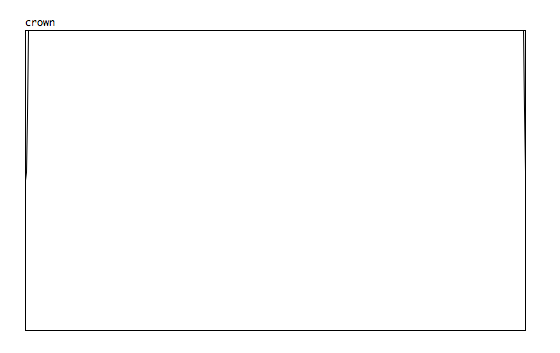

Hey 
Was wondering if anyone has whipped together a crown window for Axoloti?
Thanks!

Hey
Was wondering if anyone has whipped together a crown window for Axoloti?
Thanks!
It is a window function, which is sometimes used for removing click at the start and end of a sample.
It looks like this, when put in a table:

An Attack-Sustain-Release envelope is the solution I'd use. Gate it with your sample playback, etc.
But using an envelope kind of assumes that there is also a gate/trigger signal involved, which is not always the case.
The crown window can be based purely on a phasor which is already used for reading the table data, which is a different thing, it doesn't need any third party input from a gate or trigger.
But yeah, in some cases envelopes are great, I agree.